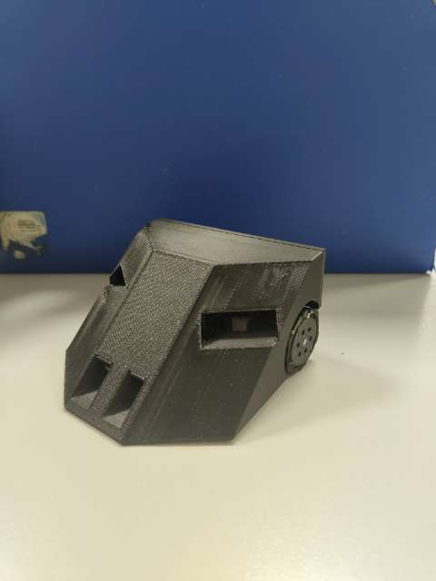
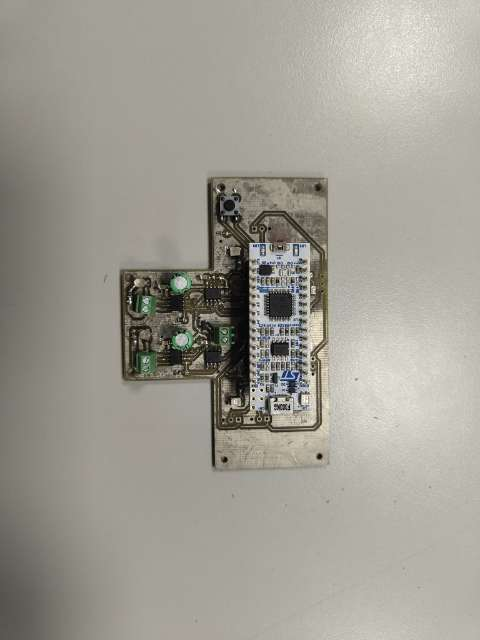
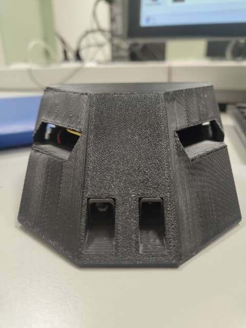
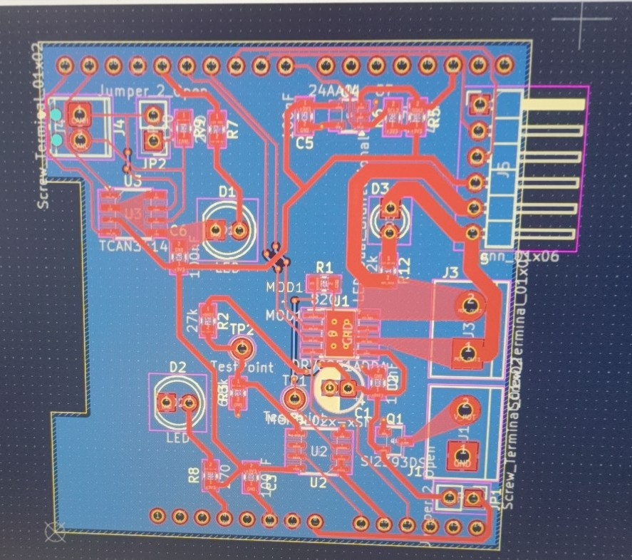
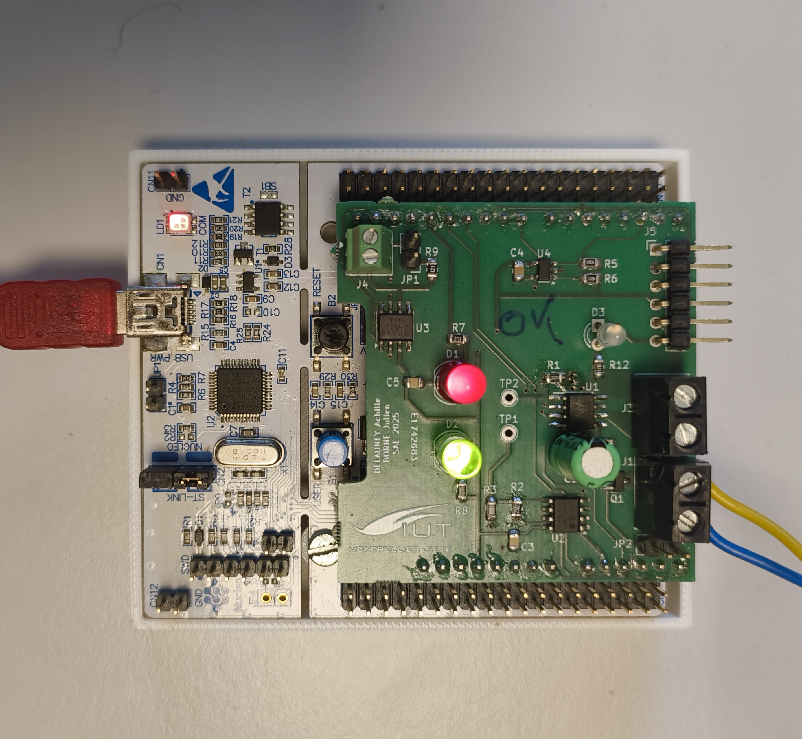

Réalisation d'un Robot Sumo
Contexte : Nous avons réalisés un découpage fonctionnel compte tenu du cahier des charges donnés. Nous nous sommes ensuite répartie les différentes tâches : Design, Routage et choix des composants, code et programation.




SAE S3 Comcéption, réalisation et programmation d'un shield moteur pour carte Nucleo
Contexte : SAE, à base d'un cahier des charges nous avons réalisé un carte shield moteur pour carte Nucleo, nous avons ensuite rédiger un code pour pouvoir piloter et gerer le moteur par bus CAN. Nous avons ensuite réalisée une procédure de fabrication et de test pour ce projet.

